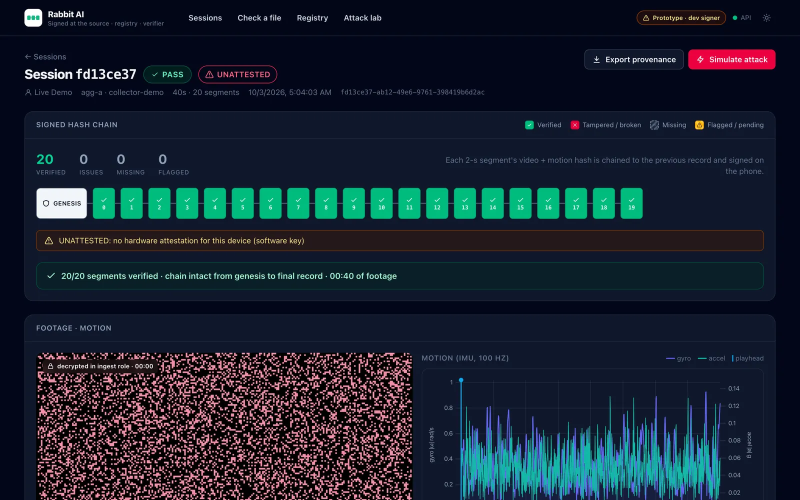

Footage a lab can train on.
- Hands out of view or out of frame.
- Bad framing or a blocked camera.
- Video and motion out of sync, or a sensor stream dropped.
- Broken or partial uploads.
On-device quality checks · in development
Prototype · early access
Capture infrastructure for robot training data. Checks on the phone tell collectors to re-record before junk is uploaded. Every segment is signed and fingerprinted, so duplicated, recycled or re-filmed footage is caught before anyone pays for it.
The problem
Robot-learning labs buy hours of human demonstration footage. Much of what gets recorded is never usable, or isn't genuine, and the waste is found late: after collectors are paid, after delivery.
Hands out of view, bad framing, desynced sensors, broken uploads. Labs drop these hours, and more of them now pay only for usable data.
Duplicates, recycled public footage, undisclosed resale, and clips re-filmed or gamed by open contributor networks.
Every vendor builds its own capture app, upload, QA and anti-fraud. Labs re-check everything after they've paid.
How it works
Video and motion recorded in 2-second segments on one device clock. Checks on the phone flag hands out of view, bad framing or broken sync, so the collector re-records on the spot.
hands ✓ · framing ✓ · sync ✓
Each segment is hashed and chained to the one before, designed to sign with the phone's secure hardware. Consent and device details are bound into the record.
seg 0007 · prev → 9b2e…44 · sig
Each segment's video and motion are fingerprinted and checked across vendors and against public datasets, so a re-encoded or recycled copy still matches. Private by default.
video phash · imu fingerprint
Synced streams upload resumably in lab-ready formats, with a usable-hours report: what passed, what was flagged, and why. Labs can verify it themselves.
usable · unique · flagged
Footage is encrypted and uploaded directly, so it never lands in the collector's camera roll.
What it catches
An hour counts only if a lab can train on it and it is what it claims to be. We check both, at capture, and the verifier shows exactly what failed.
On-device quality checks · in development
Tamper + duplicate checks working on test data · re-film check in development
FAIL · 11/15 segments OK cam0: 6.0 s missing: seq 5–7, t = 00:10–00:16 cam0: chain break at seq 8
Segments are 2 seconds long, so a 5-second cut removes three. The verifier names them and the exact break. No scrubbing through footage.
The copy lost its signed metadata and every byte changed. Its fingerprint still lines up with the signed original, frame by frame.
On test data, the prototype passes 30 of 30 tamper tests and verifies a 30-minute session in 0.21 seconds.
Known limits The prototype runs on test data and signs with a software key. It doesn't yet run the on-device quality checks or catch a screen being re-filmed. We're building both: real-time checks for hands, framing and sync, and a check that compares the phone's motion data with the video.
Prototype
Phone capture, signed hash chain, verifier and duplicate registry, running on test data today. On-device quality checks and the usable-hours report are next.

Who it's for
$0.50 per usable hour delivered, with volume tiers · free design-partner pilot, then a $1,000/month minimum
Verifier + usable-hours reports · subscription · early access for a small number of labs
Principles
One stack and one registry across every vendor that joins. Each vendor makes it more useful to every lab.
We never buy or sell data, so we don't compete with the aggregators or labs who rely on us.
Our highest tier is our own signed capture app on hardware-attested phones. Every report says which tier each hour came from.
Wearer consent is signed into the record and location is off by default. Duplicate matching is private and license-aware.
Team
Co-founder · CEO
Leads the capture SDK and on-device signing.
LinkedIn ↗ profile of Rithwick SethiCo-founder · CTO
Leads the backend, registry and verifier.
LinkedIn ↗ profile of Om KulkarniCarnegie Mellon University.
Met at CMU in 2025 and co-founded NAAMI together.
Early access
We're looking for a small group of robot-data aggregators and robot-learning labs to pilot on one real collection project, free.
Email hello@rabbitlab.ai · founders@rabbitlab.ai
Call +1 412-657-3683 · +1 412-475-2542